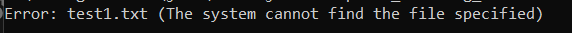

Exception Handling 5 - Write a Java program that reads a file and throws an exception if the file is empty.
import java.io.File;
import java.io.FileNotFoundException;
import java.util.Scanner;
public class Exception_handling_5 {
public static void main(String[] args) {
try {
checkFileNotEmpty("test1.txt");
System.out.println("File is not empty.");
} catch (FileNotFoundException e) {
System.out.println("Error: " + e.getMessage());
} catch (EmptyFileException e) {
System.out.println("Error: " + e.getMessage());
}
}
public static void checkFileNotEmpty(String fileName) throws FileNotFoundException, EmptyFileException {
File file = new File(fileName);
Scanner scanner = new Scanner(file);
if (!scanner.hasNextLine()) {
scanner.close();
throw new EmptyFileException("File is empty.");
}
scanner.close();
}
}
class EmptyFileException extends Exception {
public EmptyFileException(String message) {
super(message);
}
}
Output
